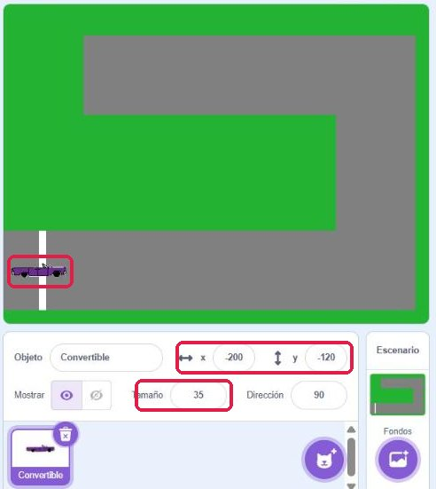
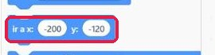

Carretera · Parte 1
Lo que vas a conseguir: el fondo de un juego de carreras: un césped verde y una carretera gris. Es tu primer dibujo en Scratch. En la próxima clase (Parte 2) programarás un coche que la recorre.
🐱 Abrir Scratch en otra pestañaConsejo: deja Scratch a un lado de la pantalla y esta página al otro. Así no tienes que ir y venir.
1El editor de pintura
- Escenario y Fondos. Lo que se dibuja con el Escenario seleccionado es el fondo: no se mueve ni tiene programas de movimiento. Se dibuja en la pestaña Fondos.
- Mapa de bits. Un modo de dibujo en el que la pantalla es una cuadrícula de puntos de color. En él el bote de pintura rellena todo el fondo vacío de un clic.
- Rellenar y Rectángulo. El bote pinta una zona entera del mismo color; el rectángulo, con la opción Relleno, dibuja un bloque macizo. Con esas dos herramientas basta para la carretera.
- Color, Saturación y Brillo. Las tres barras del color. Con la saturación a 0 sale un gris, más claro cuanto más brillo: con brillo 100, blanco.
Lo marcado en rojo en cada imagen es lo que tienes que pulsar.
2Comprueba que lo has entendido
Eliges el bote de pintura, pinchas en el fondo vacío y no se pinta nada. ¿Qué ha pasado?
3Tu actividad
Al terminar, en tu proyecto tiene que haber dos fondos, la carretera (3.1 y 3.2) y la carretera difícil (3.3), y el coche colocado en la salida con su programa (3.2).
3.1Pinta el césped y la carretera
- Paso 1Abajo a la derecha, haz clic en Escenario. A partir de ahora lo que dibujes será el fondo, no un objeto.

El Escenario, abajo a la derecha - Paso 2Arriba, abre la pestaña Fondos. Verás el fondo en blanco, «backdrop1».
- Paso 3Abajo, pulsa Convertir a mapa de bits. Así el bote de pintura rellena todo el fondo de un solo clic.

La pestaña Fondos (arriba) y el botón Convertir a mapa de bits (abajo) - Paso 4Elige la herramienta Rellenar (el bote de pintura). Haz clic en el cuadrado de color de Rellenar, arriba, y mueve las tres barras hasta Color 35, Saturación 80, Brillo 70. Es el verde del césped.

El verde del césped: Color 35, Saturación 80, Brillo 70 - Paso 5Haz clic una vez dentro del recuadro de dibujo. Todo el fondo se vuelve verde.

Con el bote, un clic y el fondo entero queda verde - Paso 6Elige la herramienta Rectángulo y comprueba que arriba está marcado Relleno, no Contorneado.
- Paso 7Cambia el color de Rellenar a gris: Saturación 0, Brillo 50. Cuando la saturación es 0, el Color da igual.

El gris de la carretera: Saturación 0, Brillo 50 - Paso 8Dibuja el primer tramo: pincha abajo a la izquierda y, sin soltar, arrastra hasta la derecha. Debe ocupar todo el ancho del fondo y, de alto, más o menos una cuarta parte del fondo. Si es más estrecho, el coche no cabrá.

El primer tramo, de izquierda a derecha y abajo - Paso 9Dibuja otros dos tramos del mismo ancho: uno vertical a la derecha, de abajo arriba, y otro horizontal arriba, de derecha a izquierda. Cada tramo tiene que montarse un poco sobre el anterior: si entre dos tramos queda una rendija verde, el coche chocará ahí.

Los tres tramos: abajo, a la derecha y arriba
⚠️ Si te equivocas
Pulsa la flecha de deshacer (arriba, junto al nombre «backdrop1») tantas veces como haga falta. Deshace los pasos de uno en uno.
3.2Marca la salida y coloca el coche
- Paso 1Antes de cambiar de color, haz clic fuera del recuadro de dibujo, en la zona de alrededor. Después cambia el color de Rellenar a blanco: Saturación 0, Brillo 100.
- Paso 2Con el Rectángulo, dibuja la línea de salida: un rectángulo muy estrecho que cruce el tramo de abajo, cerca del borde izquierdo.
- Paso 3Dibuja la raya del centro con rectángulos pequeños y alargados, separados entre sí, siguiendo los tres tramos. Haz clic fuera del dibujo después de cada uno.
⚠️ El rectángulo recién dibujado sigue seleccionado
Hasta que haces clic fuera, el último rectángulo sigue seleccionado, con puntitos azules alrededor. Si cambias el color en ese momento, cambia el color de ese rectángulo, no el del siguiente. Aquí el tramo de arriba se ha vuelto blanco por eso. Se arregla con deshacer, o con el bote de pintura en gris sobre el tramo.

El tramo de arriba se ha vuelto blanco al cambiar de color sin hacer clic fuera 
Así queda el fondo: césped, carretera, salida y raya del centro - Paso 4Añade el coche: botón Elige un objeto (el del gato, abajo a la derecha), escribe Convertible y elige el descapotable morado. Borra el gato.
- Paso 5Con el coche seleccionado, escribe 35 en la casilla Tamaño, debajo del escenario. Es el tamaño que tendrá en el juego.
- Paso 6Comprueba que cabe: arrastra el coche con el ratón por toda la carretera, también por el tramo vertical. El coche no gira: en el tramo vertical va atravesado y ocupa todo su largo. Si en algún sitio se sale al verde, ensancha ese tramo.
- Paso 7Deja el coche en la salida. Debajo del escenario aparecen su x y su y: son las coordenadas de la salida.

El coche en la salida, con su x, su y y su tamaño debajo del escenario - Paso 8Monta en el coche este programa. El bloque ir a x: y: de la paleta de Movimiento ya trae los números de donde está el coche; si no, escríbelos tú.

El bloque ir a x: y: de la paleta, con las coordenadas del coche ya puestas Pruébalo: arrastra el coche a cualquier sitio y pulsa la bandera. Vuelve a la salida. Por ahora es todo su programa: el resto lo montarás en la Parte 2.
3.3Dibuja un segundo fondo más difícil
Un segundo fondo, con una carretera más difícil. Esta la diseñas tú.
- Paso 1En la pestaña Fondos, abajo a la izquierda, pasa el ratón por el botón del fondo y elige el pincel (Pinta): aparece un fondo nuevo en blanco, «backdrop2».
- Paso 2Conviértelo a mapa de bits y pinta el césped igual que en el 3.1.
- Paso 3Dibuja una carretera con al menos cinco tramos, más difícil que la primera: más giros o tramos más estrechos, pero que el coche quepa.
- Paso 4Marca la salida y la raya del centro igual que en el 3.2.
- Paso 5Arrastra el coche por la carretera nueva para comprobar que cabe en todos los tramos.
4Lo has conseguido si…
- No queda nada blanco en el fondo: todo es césped o carretera.
- La carretera es continua: no hay rendijas verdes entre los tramos.
- Los tramos son anchos, más o menos una cuarta parte del fondo.
- La salida y la raya del centro están dibujadas, y el coche cabe en todos los tramos.
- Al pulsar la bandera, el coche va a la salida con tamaño 35 (apartado 3.2).
- Hay un segundo fondo con una carretera de al menos cinco tramos (apartado 3.3).
📤 Qué tienes que entregar
Cómo se valora. Todo va en el mismo archivo. Un apartado cuenta si está hecho; a medias no suma.
| Lo que entregas hecho | Nota |
|---|---|
| 3.1 | 5 |
| 3.1 y 3.2 | 8 |
| 3.1, 3.2 y 3.3 | 10 |
Sin el 3.1 hecho no hay nota, aunque estén los demás: lo repites.
Antes de nada: como no usamos cuenta de Scratch, tu proyecto sólo existe en esta pestaña. Si la cierras sin descargarlo, se pierde.
- Archivo → Guardar en tu ordenador. Se descarga un archivo
.sb3que aparece en tu carpeta Descargas. - Cámbiale el nombre a Sesion12-1_TuNombre.sb3.
- Súbelo a la tarea de Moodle «S12 · Parte 1».